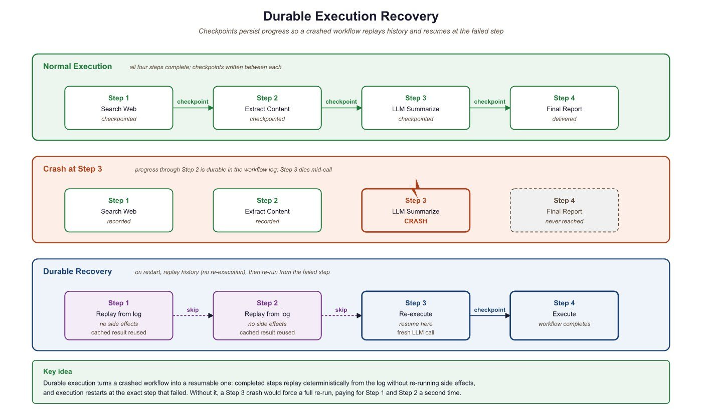

A workflow that cannot survive a server restart is not a workflow. It is a prayer.
Deploy, Workflow-Watching AI Agent
LLM agent workflows that span minutes or hours will inevitably encounter failures, and losing progress on a 20-step research pipeline is unacceptable in production. This section establishes the case for durable execution by defining what the term means, cataloguing the failure modes that motivate it, and drawing the line at which cheap retries stop being enough. The frameworks that implement durability (Temporal, Inngest, LangGraph, Restate, Hatchet) are surveyed in Section 64.2; the operational patterns that make them work in production are covered in Section 64.3.
Prerequisites
This section builds on the agent foundations from Chapter 27 (Tool Use Protocols) and the multi-agent patterns from Chapter 28 (Multi-Agent Systems), both of which produce the long-running, multi-step workloads that motivate durability. Familiarity with the production engineering practices in Section 62.2 and the gateway patterns in Section 63.1 will provide useful context for the failure modes discussed below.
64.1.1 What Durable Execution Means
Consider an agent that performs a 20-step research workflow: it searches the web, reads documents, extracts structured data, calls multiple LLM providers, writes intermediate summaries, and produces a final report. If the process crashes at step 18, a naive implementation loses all prior work. The user waits again, pays again, and hopes the second run completes without interruption. In production, this is unacceptable.
Durable execution solves this by persisting the state of a workflow at each significant step. When a failure occurs, the system resumes from the last completed checkpoint rather than restarting from scratch. The workflow function itself looks like ordinary sequential code, but the runtime guarantees that each step executes exactly once, even across process restarts, machine failures, or deployment rollouts. This guarantee, sometimes called "exactly-once semantics," transforms the reliability story for long-running agent pipelines.
LLM agent workflows have a natural split between deterministic logic (the plan: "first search, then summarize, then verify") and non-deterministic operations (the LLM calls, API requests, and tool invocations that produce unpredictable results). Durable execution frameworks exploit exactly this split. The deterministic orchestration logic is replayed from history on recovery, while non-deterministic operations are recorded and never re-executed. This maps perfectly to the agent pattern: the planning loop is deterministic, the LLM calls and tool uses are not. Frameworks like Temporal, Inngest, and LangGraph each implement this principle with different trade-offs, as we explore in Section 64.2.

"Exactly-once semantics" has been the holy grail of distributed systems since the 1980s, where it remained mostly mythological because networks lose packets and partitions happen. Temporal's trick is to lower the bar slightly: each side effect runs at-least-once at the activity level, but the workflow only commits the result once. So your LLM call might fire twice in a worst-case crash, but your downstream code only ever sees one answer. Most teams accept this compromise the moment they realize that "approximately once" is a 50x improvement over their previous "we hope the cron job ran".
64.1.2 Failure Modes That Motivate It
The case for durable execution sharpens when you enumerate the kinds of failure that plague LLM systems. Each one is recoverable on its own, but only if the system can resume from where it stopped:
- Provider rate limits cause temporary 429 errors, often clustered around traffic spikes. The fix is a delayed retry, but only if step 18's prior work is not lost.
- Network timeouts interrupt streaming responses mid-token. The agent may have already paid for 1,500 of 2,000 generated tokens with no usable output.
- Context windows overflow when an agent accumulates too much history. Recovery requires summarizing the conversation, not restarting it.
- Provider outages take entire model endpoints offline for minutes or hours. A workflow that survives across the outage window completes; one that does not, restarts.
- Memory pressure on worker nodes causes out-of-memory kills. The OOM killer does not care that your agent was 17 steps into a 20-step report.
- Deployments roll forward, terminating in-flight requests. A team that ships ten times a day cannot afford to lose every in-flight agent on each release.
Each of these failures is transient, meaning the operation would succeed if retried, but only if the system remembers where it left off. Durable execution turns each transient failure into a temporary pause rather than a full restart.
An early LangGraph user reported that their 45-step research agent crashed at step 42 due to an OpenAI rate limit, then resumed seamlessly from the checkpoint after the cooldown expired. The agent's final report was indistinguishable from an uninterrupted run. The user's reaction: "It felt like saving a video game, except the game is a PhD research assistant."
64.1.3 When You Don't Need It (Cheap Retries Instead)
Not every LLM workload justifies a durable execution runtime. The fixed cost of operating Temporal, Restate, or even an Inngest account is non-trivial: server clusters, dashboards, retention policies, on-call rotations. For some workloads, a simple retry decorator wrapped around a single API call is sufficient, and the operational burden of a workflow engine is pure overhead.
Three rules of thumb help draw the line. First, look at workflow duration: if the entire workflow runs in under a few seconds end-to-end, the probability of mid-flight failure is low and the cost of retry-from-scratch is low. A chatbot turn that calls one LLM and one tool is in this category. Second, look at side effects: if the workflow has no externally visible side effects (no payments, no emails, no database writes that other systems read), naive retries are safe. A pure synthesis task that reads documents and produces a summary can be retried freely. Third, look at cost per attempt: if a full restart costs cents rather than dollars, the engineering effort to add durability rarely pays back. Single-turn classification with a small model falls here.
The crossover point is somewhere around the moment the workflow either (a) crosses one minute of wall-clock work, (b) produces an external side effect that cannot be safely repeated, or (c) costs more than a dollar per full execution. At that point, the implicit retry budget of "just start over" stops being cheaper than the explicit retry budget of a durable runtime. The frameworks in Section 64.2 all target this crossover and beyond; the operational patterns in Section 64.3 turn the crossover from "we have a workflow engine" into "the workflow engine actually saves us money in production."
The "cheap retry" alternative is not "no retry." Even chatbot turns should wrap their LLM calls in a tenacity-style decorator with jittered backoff for transient 429s and 5xxs. The distinction is between local retry (one decorator, one API call, no state to recover) and workflow-level retry (a runtime that remembers what completed and what did not). Section 64.3.1 covers the local case; the durable runtimes in Section 64.2 cover the workflow case.
Section 64.2 catalogues the durable execution frameworks: Temporal, Inngest, LangGraph persistence, plus the newer Restate and Hatchet runtimes. The section is intentionally a catalog (catalog-by-design) so you can compare implementations side by side before choosing one.